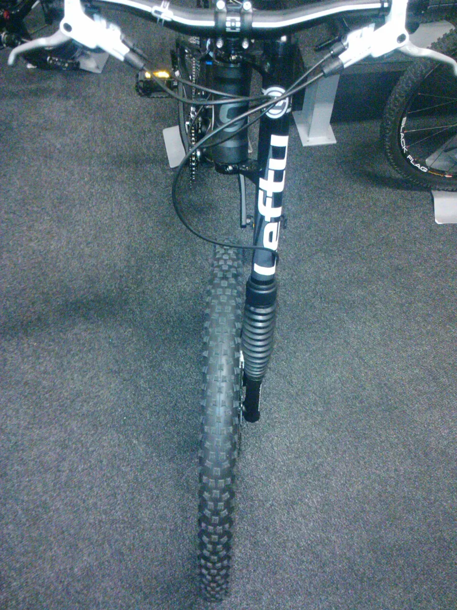

Подвеска
Cannondale Headshok и Lefty
Cannondale известна необычными решениями подвески. В начале 1990-х компания представила Headshok — короткоходный амортизатор, встроенный в рулевой узел, с телескопом на игольчатых подшипниках. В конце 1990-х появилась односторонняя вилка Lefty.

Поколения Lefty
Lefty прошла несколько поколений; среди них Lefty Max, Lefty Supermax, Lefty Ocho, а для гравийных велосипедов — Lefty Oliver. Устройство, инструмент и интервалы обслуживания у них различаются, поэтому всегда сверяйтесь с официальным мануалом Cannondale для вашей модели и года.
Особенности
- Одна нога и консольная ось: колесо снимается вбок.
- У классических моделей телескоп на игольчатых подшипниках вместо втулок скольжения.
- Собственные втулки и стандарты — обычные передние колёса не подходят.
Что почитать дальше
Подробный безопасный порядок действий — в инструкции «Cannondale Lefty: устройство, снятие колеса и обслуживание»; схема — в разделе «Устройство».